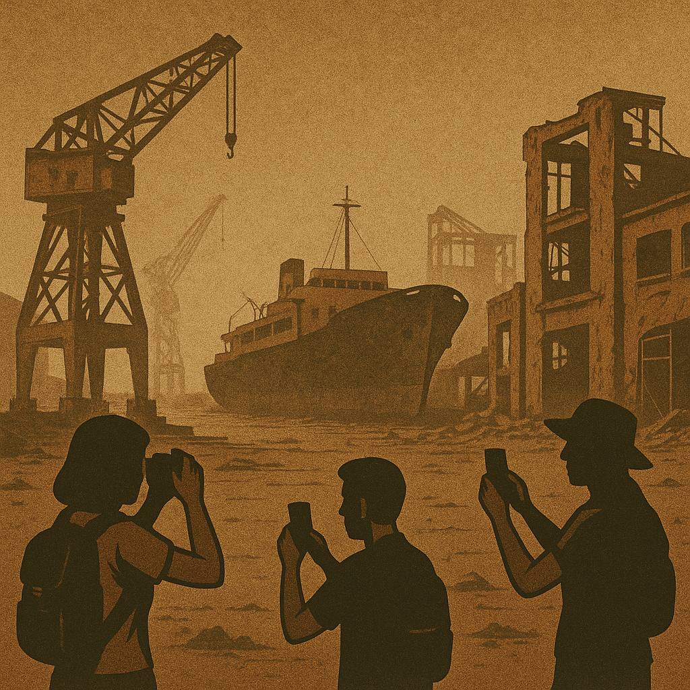

Publicado em 2025-05-12 08:16:53
Os factos que ninguém quer ouvir. A verdade em Portugal é sempre mal vista e os políticos preferem sempre narrativas de embalar.
Portugal, antes do 25 de Abril de 1974, era um país com profundas limitações democráticas, censura e repressão. Mas no plano económico-industrial, estava a consolidar uma base produtiva estratégica que lhe conferia autonomia e projeção internacional em setores-chave. Com uma população ainda empobrecida, o país construía, mesmo sob ditadura, uma infraestrutura industrial que rivalizava com outras nações europeias em crescimento.
Lisnave e Setenave, os estaleiros navais portugueses, figuravam entre os maiores da Europa, especializados na construção e reparação de grandes embarcações. Empregavam milhares de trabalhadores altamente qualificados e tinham contratos internacionais em carteira.
A Sorefame, fundada em 1943, era uma referência em fabrico de material ferroviário: carruagens, locomotivas elétricas, e componentes exportados para mercados como França, Moçambique, Brasil e Argentina.
A Siderurgia Nacional, no Seixal, produzia aço e derivados, e representava o esforço de industrialização pesada do país. Era um símbolo de autonomia energética e estrutural, crucial para a construção civil, infraestruturas e defesa.
O país contava ainda com os Caminhos de Ferro do Estado, modernizados para a época, com linhas eletrificadas e comboios eficientes. Existiam fábricas de montagem e produção de viaturas pesadas (como a Berliet), bem como unidades da Renault, da Volkswagen e da Citroën a operar em território nacional.
O projeto do Porto de Sines estava em marcha — uma infraestrutura estratégica para se tornar o maior porto de águas profundas do Atlântico Sul europeu, essencial para a logística global.
Com o 25 de Abril vieram conquistas sociais, liberdade, eleições livres — e, com elas, uma transição económica desastrosa. Greves constantes, ocupações forçadas, manifestações caóticas, nacionalizações ideológicas sem critério económico e afastamento de quadros técnicos e administrativos por motivos políticos fragilizaram a espinha dorsal da indústria nacional.
As empresas foram nacionalizadas sem planos de gestão eficazes, os investimentos externos desapareceram e o capital nacional foi expulso ou colocado sob suspeita. O PREC — Processo Revolucionário em Curso — destruiu as condições de estabilidade necessárias ao funcionamento de unidades industriais complexas.
Com a entrada na CEE, o que restava da indústria portuguesa foi alvo de reestruturações forçadas e, muitas vezes, impostas por diretivas europeias que favoreceram os grandes produtores do Norte da Europa. As cotas agrícolas, as limitações à produção automóvel e a imposição de normas de concorrência destruíram o que restava da indústria pesada.
A Sorefame foi encerrada em 2004, a Siderurgia foi privatizada e desmantelada, a Lisnave passou de potência mundial a fantasma industrial, e os Estaleiros de Viana do Castelo acabaram alvo de privatizações polémicas.
Hoje, Portugal sobrevive de:
O país perdeu capacidade de produzir, exportar, inovar. Tornou-se um “resort da Europa”, onde se come bem, vive-se devagar, e os jovens emigram para procurar o que aqui foi desmantelado.
O 25 de Abril trouxe liberdade política, mas a democracia portuguesa falhou rotundamente na defesa da soberania económica. De uma nação com estaleiros, comboios, aço, energia e fábricas, tornámo-nos um entreposto turístico e um receptor de fundos alheios.
É tempo de fazer um balanço honesto. E de perceber que um país livre sem produção é um país vulnerável.
Portugal precisa urgentemente de um novo modelo: baseado na inovação, na reindustrialização verde e digital, na valorização do trabalho e na reconquista da autonomia produtiva.
Porque não há verdadeira independência sem capacidade de construir, inovar e decidir o próprio destino.
Portugal precisa de uma nova revolução — mas agora no pensamento económico.
Por Francisco Gonçalves in Fragmentos de Caos